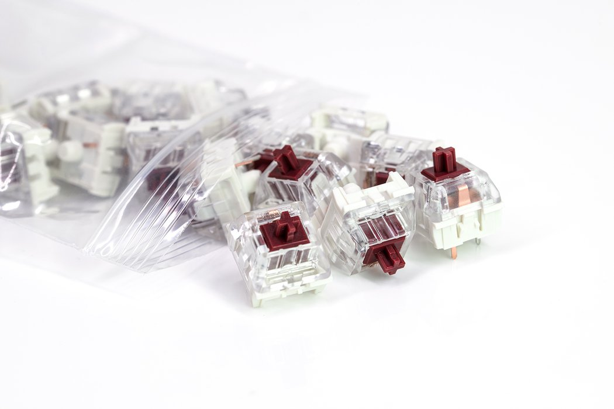

Kailh Speed Copper switches have a small tactile bump at the very top of the keypress. After the bump, the switch has a smooth travel until bottoming out. The "Speed" name comes from the actuation point of the switch. It is at 1.1mm which makes it a good option for gaming keyboards where a fraction of a second can make a difference.
Here is a typing test with the Kailh Speed Copper switch:
Go back